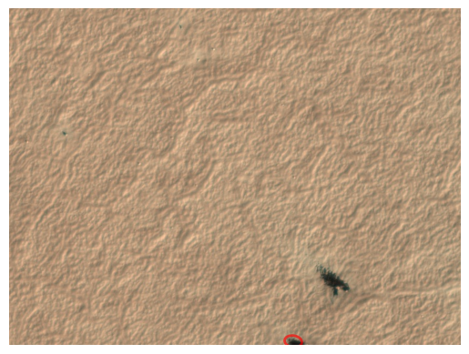
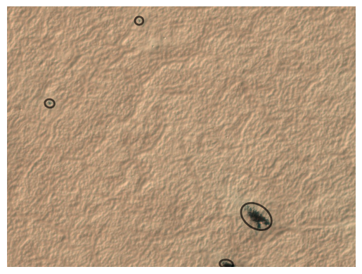
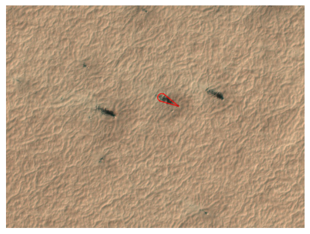
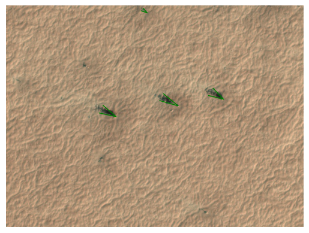

tile_with_blotches = "APF0000004"Markings
Module to work with both fan and blotch markings graphically.
calc_fig_size
def calc_fig_size(
width
):Calc figure height in ratio of subframes.
show_subframe
def show_subframe(
tile_id, ax:NoneType=None, aspect:str='auto'
):Call self as a function.
set_subframe_size
def set_subframe_size(
ax
):Set plot view limit on Planet 4 subframe size.
MarkingMixin
def MarkingMixin(
*args, **kwargs
):Shared behavior for Blotch and Fan single-marking classes.
Subclasses must define: - to_average: list of field names - _catalog_getter: staticmethod returning catalog DataFrame - data: backing pandas Series
Blotch
def Blotch(
data, # object with blotch data attributes: x, y, radius_1, radius_2, angle
scope:str='planet4', # "planet4" or "hirise",
with_center:bool=False, # if True, plot the center of the blotch,
url_db:str='', # path to the url database,
**kwargs
):Shared behavior for Blotch and Fan single-marking classes.
Subclasses must define: - to_average: list of field names - _catalog_getter: staticmethod returning catalog DataFrame - data: backing pandas Series
b = Blotch.from_tile_id(tile_with_blotches)bBlotch.from_marking_id('B010c77') # tile_id='APF0000004', area=571.2238541501484b.plot()
MarkingCollection
def MarkingCollection(
df, color:str='green', **build_kwargs
):Base class for Blotches and Fans containers.
Blotches
def Blotches(
df, with_center:bool=False, color:str='red'
):Container for Blotch objects with idempotent plotting.
tb = Blotches.from_tile_id(tile_with_blotches)tb.plot()
rotate_vector
def rotate_vector(
v, # Vector to be rotated
angle, # Angle in degrees
):Rotate vector by angle given in degrees.
Fan
def Fan(
data, # object with fan data attributes: x, y, angle, spread, distance
scope:str='planet4', # "planet4" or "hirise",
with_center:bool=False, # accepted for API symmetry with Blotch; fans have no center, so ignored
**kwargs
):Shared behavior for Blotch and Fan single-marking classes.
Subclasses must define: - to_average: list of field names - _catalog_getter: staticmethod returning catalog DataFrame - data: backing pandas Series
tile_with_fans = "APF000000c"f = Fan.from_tile_id(tile_with_fans, 1)fFan.from_marking_id('F00b604') # tile_id='APF000000c', area=834.5280047852875f.plot('red')
Fans
def Fans(
df, scope:str='planet4', color:str='green', **kwargs
):Container for Fan objects backed by a LineCollection for plotting.
fans = io.get_fans_for_tile('c')fans = Fans(io.get_fans_for_tile('c'))fans.plot()
Fans.from_tile_id('c').plot()markings_to_geoseries
def markings_to_geoseries(
df, kind, crs:NoneType=None, body:str='mars', system:str='ocentric', n_arc:int=16, n_ell:int=48
):Approximate ground outlines for many markings as a GeoSeries.
Fast, vectorized per marking (sector for fans, ellipse for blotches). Pass crs = a projected image’s CRS to overlay on that raster, else lon/lat. For the exact outline of a single marking use Fan/Blotch.to_shapely_ground.